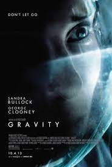
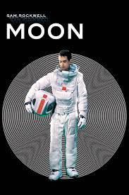

Astronauts Lovell, Haise and Swigert of the Apollo 13 moon mission find themselves stranded when their spacecraft gets damaged. Soon, NASA tries to bring them back before it is too late Apollo 13 moon mission to bring them back find themselves stranded .
Release Date : June 30, 1995
Director : Ron howard
Cast :Tom hanks
Language : English

Gravity
Gravity is a 2013 science fiction thriller film directed by Alfonso Cuarón, who also co-wrote, co-edited, and produced the film. It stars Sandra Bullock and George Clooney as American astronauts who are stranded in space after the mid-orbit destruction of their Space Shuttle, and attempt to return to Earth.
Release Date : 11 October 2013
Director : Alfonso Cuarón
Cast : Sandra bullock
Language : English

Moon
Astronaut Sam Bell has a quintessentially personal encounter toward the end of his three-year stint on the Moon, where he, working alongside his computer, GERTY, sends back to Earth parcels of a resource that has helped diminish our planet's power problems.
Release Date : 17 July 2009
Director : Duncan Jones
Cast : Sam Rockwell
Language : English
Interstellar
Interstellar is a 2014 epic science-fiction film produced by Christopher Nolan. It stars Matthew McConaughey, Anne Hathaway, Jessica Chastain, Bill Irwin, Ellen Burstyn, Matt Damon, and Michael Caine. Set in a dystopian future where humanity is struggling to survive, the film follows a group of astronauts who travel .